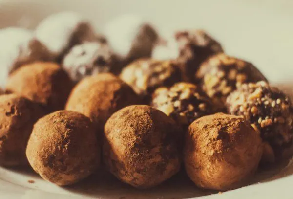
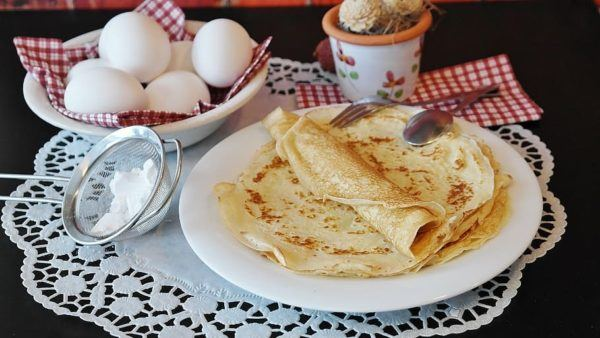

TRUFAS DE CHOCOLATE – REPOSTERÍA PARA HACER DURANTE LA CUARENTENA
INGREDIENTES (25 UNIDADES)
- 300 gr de chocolate
- 200 ml de nata para montar, también conocida como crema de leche para batir
- 50 gr de mantequilla
- Fideos de chocolate, cacao en polvo o la cobertura final que deseemos
CREPES DULCES – REPOSTERÍA PARA HACER DURANTE LA CUARENTENA
INGREDIENTES (25 UNIDADES)
- 100 gr de harina de trigo
- 200 ml de leche
- 1 Huevo
- 50 gr de azúcar
- mantequilla